Private Reserve · DIN controller
Software User Manual
Operator screens for production image tdisplay_s3_prod on the LilyGo T-Display-S3 (Board A).
The LCD and the phone web page share one controller state.
- Overview
- Main
- Calibration
- Diagnostics
- Settings
Private Reserve · DIN controller · first draft
Software — operator UI
Production image tdisplay_s3_prod on the LilyGo T-Display-S3 (Board A). The LCD and the phone web page share one controller state. The EC11 knob, the web keypad, the rockers, and the bottle-door key all go through one command arbiter.
1. Surfaces
View the LCD with USB-C on the left and the EC11 on the right. Firmware uses Arduino_GFX rotation 3. The logical panel is 320 wide by 170 tall. Origin (0, 0) is the operator-facing top-left.
The web page is the same state tree plus chrome the LCD does not have: tabs across the top, a keypad on the right that maps to the knob. Use it in landscape on a phone. The layout scales to fill the viewport without clipping. STA in the header means the ESP32 joined site Wi-Fi as a station. AP means the fallback SoftAP is serving.
| Surface | Role |
|---|---|
| LCD (ST7789) | In-box operator panel. Off means GPIO38 backlight and GPIO15 panel power only. The MCU stays up. |
| Web (port 80) | Same screens. Tabs jump to Main, Calibration, Diagnostics, Settings, or Docs. Keypad on the right: turn − / +, press (Return), hold (back). Figure 1. |
| EC11 | TURN scroll or adjust. PRESS open or accept. HOLD back or cancel. |
| GPIO14 | On-board T-Display button. Same PRESS / HOLD window as the knob switch. Does not revert a recent turn. |
1.1 Full web page
On site Wi-Fi, open http://private-reserve.local or the STA address on port 80. On the fallback AP, join PrivateReserve with password reserved, then open http://192.168.4.1/. The LCD shows only the 320 × 170 panel. The web page adds tabs on top and a keypad on the right. This shot is Documentation. The panel inside the bezel is the same DOC screen as Main figure 8.
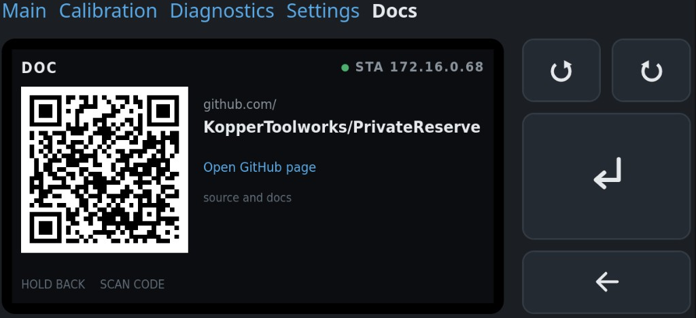
| On screen | Meaning |
|---|---|
Main · Calibration · Diagnostics · Settings · Docs | Top tabs. Jump to that page. They turn the LCD on if it was blank. Same destinations as the mode menu. |
Docs in white | Active tab. Other tabs stay blue. The controller is on the Documentation page. |
| Bezel, 320 × 170 | The LCD panel. Same state tree as the physical display. Header here is DOC with STA 172.16.0.68. |
QR · github.com/ · KopperToolworks/PrivateReserve | Public project page. The web copy adds a blue Open GitHub page link the LCD does not have. |
| Top pair, circular arrows | TURN − (CCW) and TURN + (CW). Same as the knob. |
| Tall Return arrow | PRESS. On Documentation this does nothing. |
| Wide left arrow | HOLD back. From Documentation this returns to the mode menu. |
2. Knob map
HOLD fires once when the push has been down for ec11_hold_min_ms (default 400 ms). It does not wait for release. A shorter down is PRESS. Keeping the button down does not fire a second HOLD. ec11_hold_max_ms remains a setting; it does not delay the first HOLD.
Pressing the knob can twist CLK/DT. If the highlight moved within ec11_press_revert_ms (100 ms) of an EC11 press, firmware restores the previous item, then handles PRESS. Rotation is ignored while SW is down.
On bottle key, limit markers, and override rockers, TURN selects one of two choices. The highlight stops at the end instead of wrapping. Extra clicks in that direction do nothing. One click moves once.
| Gesture | Typical meaning | Web keypad |
|---|---|---|
| TURN − / + | Scroll a list or change a pending value | Top pair, circular arrows |
| PRESS | Open a screen, start a stage, or accept | Large Return arrow |
| HOLD | Back one screen, or cancel a live procedure | Wide left arrow |
3. Command priority
Hard overcurrent and sensor or limit faults outrank all commands. Obstruction handling outranks ordinary commands. Among ordinary sources the order is EC11 → web → rocker → hall. At most one state-changing command runs per control cycle.
A live calibration or diagnostic-jog step owns the motor. Hall and rocker events may show on the screen. They cannot preempt that step. Main accepts hall and rocker triggers. Diagnostics has two jog pages. Jog by time is an EC11 (or web keypad) millisecond queue. PRESS while idle edits duty (5–25%) and time per detent (200–1000 ms). The encoder is not polled while that queue is moving. Jog by position queues relative shaft counts (no origin required) and runs only while the AS5600 and magnet are healthy. Opening that page polls the encoder. Current still draws as a live graph when the ACS712 is sampling.
There is no operator Stop on Main. Cancel exists only for a running calibration or diagnostic procedure. Cancel removes PWM, waits for current decay, leaves K1 unchanged, discards incomplete results, and returns to that mode’s menu.
Never write NVS while the motor runs. Config writes need an idle motor.
4. Boot, blanking, Wi-Fi
The screen is on at boot. Default idle timeout is 5 minutes (display_timeout_ms = 300000). Any EC11 turn or press, GPIO14, or web command resets the timer. Wake from a blanked panel returns to Main.
Calibration, diagnostics, faults, and any prompt that needs an answer inhibit blanking. A latched PositionUnknown on Main does not hold the panel on forever. That fault is the default boot state until origin is found.
STA join uses the stored SSID and password. If the SSID is empty or join fails, firmware starts a SoftAP.
| Fallback AP | Default |
|---|---|
| Name (SSID) | PrivateReserve |
| Join password | reserved (WPA2, eight characters) |
| Main page | http://192.168.4.1/ |
| Set site Wi-Fi | http://192.168.4.1/wifi |
Type the join password on the phone. Then open the main page. The LCD shows that password on Settings → Network, on Diagnostics → Network while SoftAP is up, and on the Wi-Fi-cleared result. Station (house) password stays masked. When STA joins, HTTP is on the STA address and http://private-reserve.local. The steel lid can block the onboard antenna. That note belongs on the network diagnostic screen.
Settings → Service can clear the stored station SSID and password. That write is immediate. The live STA session stays until reboot. After reboot, empty SSID skips STA and starts SoftAP. Fallback AP name and password stay. The same Service list can reboot the controller (PRESS twice). PRESS on the Wi-Fi-cleared result screen also reboots. See Settings figures 11 and 12.
No automatic resume after reset. A watchdog, brownout, operator reboot, or power cycle forces PWM off and cancels the prior command.
5. Modes
Default after boot is Main (Standard Operating Mode in the spec). Settings and Documentation are not extra operating modes. They are menu pages reached the same way as Calibration and Diagnostics. Motion is idle while settings are edited.
| Page | Header | Panel shots | What it is |
|---|---|---|---|
| Main | MAIN or NEEDS SETUP | 8 | Live door. Mode menu: Main, Diagnostics, Calibration, Settings, Documentation. |
| Calibration | CAL · … | 13 | Guided stages. Path-clear before any move. Save is one NVS write on Review. |
| Diagnostics | DIAG · … | 14 | One screen per input or output. Two jog pages own the motor: time (encoder unused) and position (healthy AS5600 required). PRESS edits duty % and step. Current is a live graph. Obstruction test owns the motor. Bottle key, limit markers, and override rockers can inject a cooked signal from PRESS. |
| Settings | SET · … | 12 | Staged edits. Review commits. Service actions are destructive and confirm twice, including reboot and clear station Wi-Fi. |
| Documentation | DOC | 1 | QR and URL for the public GitHub page. HOLD returns to the mode menu. PRESS does nothing. |
Entry screens for each mode:
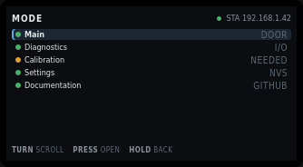
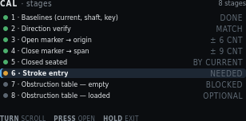
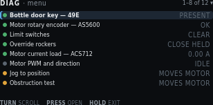

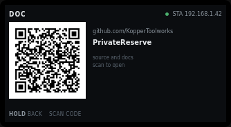
Every label on these shots is named in the field table on the linked page.
6. Field I/O the screens name
Position is AS5600 counts from the open origin. Inches appear only after stroke entry. The three analog sensors stay independent.
| Name | Part | GPIO / Board A | Job |
|---|---|---|---|
| Bottle door key | 49E / SS49E | GPIO1, T23 | Magnet present or absent. Automatic open/close. |
| Shaft encoder | AS5600 | GPIO43/44, T10/T9 | Door position as accumulated counts. Diagnostics shows I²C ACK/NACK separately from magnet STATUS. |
| Current load | ACS712-05B | GPIO2, T22 | Motor current. Envelope and snug. |
| Open marker | NC switch | GPIO17, T7 | Near-end flag, open side. |
| Close marker | NC switch | GPIO3, T21 | Near-end flag, close side. |
| Override rockers | two paralleled stations | GPIO10 T20, GPIO18 T8 | Edge-trigger open/close. Centre does nothing. |
| Knob | EC11 | GPIO11–13, on-board | Menu, settings, cancel, acknowledge. |
7. Needs setup
If origin, marker spans, or the calibration format is invalid, Main blocks automatic motion. Only guided calibration and diagnostic jog may move the motor. Time jog still runs without a trusted shaft position. Position jog needs a healthy encoder but not a known origin (relative counts). Duty and step are edited on those pages. Hall and rocker triggers stay disabled.
The AS5600 is single-turn. The stroke spans several turns. After power loss the firmware enters PositionUnknown and needs a guided seek to the open marker. Direction verify must pass before any limit seek.
With an invalid obstruction table, automatic Main motion stays blocked. Recovery uses the 2.50 A hard ceiling until a relearn arms the table.
Private Reserve · DIN controller · first draft
Main
Live door state. The spec name is Standard Operating Mode. The operator label is Main. This is the default screen after boot and after wake from a blanked panel.
NEEDS SETUP. The hero is a red
POSITION UNKNOWN banner. Run Calibration.
1. Live screen chrome
Every live Main state uses the same regions. A latched fault replaces the hero and the current meter with a red banner. GPIO numbers, duty, phase timers, bin index, and drift live in Diagnostics, not here.
| Region | What it shows |
|---|---|
| Header left | MAIN when setup is complete, or NEEDS SETUP. |
| Header right | Link state. Green pip and STA plus the IP, or amber pip and AP plus the SoftAP name (default PrivateReserve). The join password is not in the header. |
| Hero | Current action in the largest type. A latched fault replaces this with a red banner. |
| Current | Live amps against the learned trip for the bin the door is in. The red tick is that bin’s trip. The hard 2.50 A ceiling is the right edge. Hidden when a fault banner occupies the hero. |
| Travel | Share of the measured span in AS5600 counts. Ticks are the two near-end markers. Outer ends are open-seated and closed-seated. The grey line under the bar is percent and counts, or position unknown. |
| Tiles | Bottle key, open marker, close marker, shaft rev/s. The close-marker title clips to CLOSE MARK… on the 320-pixel panel. |
| Footer | TURN menu · PRESS menu. Either gesture opens the mode menu. |
1.1 Needs setup — position unknown
Default after power loss until guided calibration finds origin. Automatic hall and rocker triggers stay off.
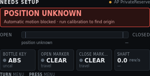
| On screen | Meaning |
|---|---|
NEEDS SETUP | Header left. Origin, markers, or the calibration format is invalid. Automatic motion is blocked. |
Amber pip + AP PrivateReserve | Header right. Station join failed or SSID is empty. Fallback SoftAP is serving. Default name is PrivateReserve. Default join password is reserved. The header does not show the password. Read it on Settings → Network or Diagnostics → Network. Then open http://192.168.4.1/. |
POSITION UNKNOWN | Red banner title. The AS5600 is single-turn. After reset the firmware does not know which turn the door is on. |
Automatic motion blocked · run calibration to find origin | Banner detail. Hall and rocker triggers stay disabled until Calibration finds origin. |
OPEN / CLOSED | Travel ends. Open is the left of the bar. Closed is the right. |
| Empty travel track, grey thumb | No fill and no marker ticks in this state. Position is not known, so the bar cannot show a share of span. |
position unknown | Left scale under the bar. Replaces percent until origin exists. |
— (right of the scale) | Count field. Empty because there is no origin to accumulate from. |
BOTTLE KEY · grey pip · ABS · uncal | Hall reads absent. Key levels are not yet captured, so the grey line is uncal instead of an ADC count. |
OPEN MARKER · grey pip · CLEAR · travel | Open near-end switch is not made. travel means the door is not at that end (or the end is unknown). |
CLOSE MARK… · grey pip · CLEAR · travel | Close near-end switch is not made. Title is Close marker. The tile clips the word. |
SHAFT · 0.0 rev/s · — | Motor at rest. Direction dash means no rotation this cycle. |
TURN menu · PRESS menu | Either gesture opens the mode menu. Position Unknown is not an acknowledge-away fault. |
1.2 Opening
Setup is complete. The bottle key went absent. The door is in cruise toward open.
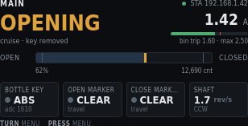
| On screen | Meaning |
|---|---|
MAIN | Header left. Setup is complete. Automatic motion is allowed. |
Green pip + STA 192.168.1.42 | Header right. ESP32 joined site Wi-Fi as a station. HTTP is on this address. |
OPENING (amber) | Hero. Current action. Amber means the motor is moving. |
cruise · key removed | Motion phase and why the move started. Cruise is the middle of the profile. The bottle key is absent. |
1.42 A | Live motor current from the ACS712 after scale. |
| Green fill on the current bar | Live amps as a share of the 2.50 A hard ceiling. Green because 1.42 A is under this bin’s trip. |
| Red tick on the current bar | This bin’s learned trip (1.60 A). Not the hard ceiling. |
bin trip 1.60 · max 2.50 | Numeric trip for the bin the door is in, then the compile-time ceiling at the right edge of the bar. |
OPEN / CLOSED | Travel ends. |
| Blue fill to 62%, yellow thumb, two marker ticks | Door is 62% of the measured span toward closed. Marker ticks sit near each end. Neither tick is hot. |
62% | Share of measured span. Percent is the headline. Counts sit on the right. |
12,690 cnt | AS5600 counts from the open origin. |
BOTTLE KEY · grey pip · ABS · adc 1610 | Key absent. Raw ADC is the diagnostic value for this tile. |
OPEN MARKER · grey pip · CLEAR · travel | Open switch not made. Door is in mid travel. |
CLOSE MARK… · grey pip · CLEAR · travel | Close switch not made. |
SHAFT · 1.7 rev/s · CCW | Shaft speed and direction. On this build CCW is toward open. |
TURN menu · PRESS menu | Open the mode menu. There is no Stop on Main. |
1.3 Idle — closed and seated
Move finished. Seal is loaded. Motor is at rest.
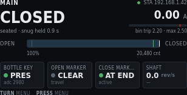
| On screen | Meaning |
|---|---|
MAIN | Header left. Setup complete. |
Green pip + STA 192.168.1.42 | Station Wi-Fi, HTTP on this IP. |
CLOSED | Hero. Door is at the closed-seated end. White, not amber, because the motor is idle. |
seated · snug held 0.9 s | How the stop was held. Snug is current-rise seating past the close marker. 0.9 s is hold time this cycle. |
0.00 A | Motor current at rest. |
| Empty current bar, red tick near the right | Live fill is zero. The tick is this bin’s trip (2.20 A). |
bin trip 2.20 · max 2.50 | Closed-end bin trip, then the 2.50 A ceiling. |
OPEN / CLOSED | Travel ends. |
| Fill to the closed end, close-marker tick hot | Door is at 100% of span. The close-marker tick is active because the switch is made. |
100% · 20,480 cnt | At closed seated. Counts include travel past the close-marker edge. |
BOTTLE KEY · green pip · PRES · adc 2980 | Bottle in the recess. Green pip means present on this polarity. |
OPEN MARKER · grey pip · CLEAR · travel | Open switch not made. |
CLOSE MARK… · green pip · AT END · active | Close switch is made. AT END is the cooked label. active is the raw switch state. |
SHAFT · 0.0 rev/s · — | At rest. No rotation this cycle. |
TURN menu · PRESS menu | Open the mode menu. |
1.4 Closing — creep and snug
Past the close marker. The profile has left cruise and is seating the seal.
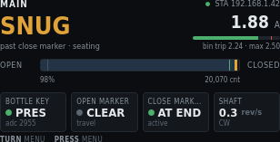
| On screen | Meaning |
|---|---|
MAIN | Header left. |
Green pip + STA 192.168.1.42 | Station Wi-Fi. |
SNUG (amber) | Hero. Creep-and-seat phase after the close marker. Motor is still moving. |
past close marker · seating | Why snug is showing. Operational snug is a current-rise stop, not a home. |
1.88 A | Live current. Seal loading raises amps above cruise. |
| Green fill, red tick near the right | 1.88 A is still under this bin’s 2.24 A trip. |
bin trip 2.24 · max 2.50 | Near-closed bin trip, then the hard ceiling. |
OPEN / CLOSED | Travel ends. |
| Fill at 98%, close-marker tick hot | Almost seated. Close switch is made. |
98% · 20,070 cnt | Share of span and counts from origin. |
BOTTLE KEY · green pip · PRES · adc 2955 | Bottle present. Close was commanded with the key in. |
OPEN MARKER · grey pip · CLEAR · travel | Open switch not made. |
CLOSE MARK… · green pip · AT END · active | Close switch made. |
SHAFT · 0.3 rev/s · CW | Slow creep toward closed. CW is toward closed on this build. |
TURN menu · PRESS menu | Open the mode menu. The move ends at seated, a reverse trigger, a fault, or obstruction handling. |
1.5 Obstruction — reversing
Close current crossed the bin trip. Firmware reversed toward open. Obstruction handling outranks ordinary commands.
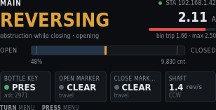
| On screen | Meaning |
|---|---|
MAIN | Header left. |
Green pip + STA 192.168.1.42 | Station Wi-Fi. |
REVERSING (amber) | Hero. Close obstruction. The door is opening to clear the path. |
obstruction while closing · opening | Cause and the commanded direction now. |
2.11 A | Live current. Above this bin’s trip, so the fill is red. |
| Red fill past the red tick | Live amps exceeded the learned trip (1.66 A). That is why reverse started. |
bin trip 1.66 · max 2.50 | Mid-travel bin trip, then the hard ceiling. Reverse used the learned trip, not the 2.50 A ceiling. |
OPEN / CLOSED | Travel ends. |
| Fill at 48%, neither marker hot | Mid travel. Both switches clear. |
48% · 9,830 cnt | Position when reverse is in progress. |
BOTTLE KEY · green pip · PRES · adc 2971 | Bottle still present. Close had been the automatic command. |
OPEN MARKER · grey pip · CLEAR · travel | Not yet at the open end. |
CLOSE MARK… · grey pip · CLEAR · travel | Not at the close end. |
SHAFT · 1.4 rev/s · CCW | Opening. CCW toward open on this build. |
TURN menu · PRESS menu | Open the mode menu. Reverse still owns the motor until it finishes or faults. |
1.6 Fault — second close obstruction
A second close obstruction in the retry window latches a fault. The current meter leaves the panel. PRESS acknowledges when firmware allows it.
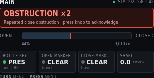
| On screen | Meaning |
|---|---|
MAIN | Header left. Setup is still complete. This is a motion fault, not Needs Setup. |
Green pip + STA 192.168.1.42 | Station Wi-Fi. |
OBSTRUCTION ×2 | Red banner title. Second close obstruction. The door stopped instead of reversing again. |
Repeated close obstruction · press knob to acknowledge | Banner detail. PRESS clears this banner when the firmware allows it. TURN still opens the mode menu. |
OPEN / CLOSED | Travel ends. The current meter is hidden while the fault banner occupies the hero. |
| Red thumb at 44% | Position where the second trip stopped the door. Red track because this is a fault state. |
44% · 9,010 cnt | Stopped position. |
BOTTLE KEY · green pip · PRES · adc 2969 | Bottle still present. |
OPEN MARKER · grey pip · CLEAR · travel | Not at the open end. |
CLOSE MARK… · grey pip · CLEAR · travel | Not at the close end. |
SHAFT · 0.0 rev/s · — | Motor stopped after the fault. |
TURN menu · PRESS menu | On this fault, PRESS acknowledges. TURN opens the mode menu. Position Unknown is the fault that cannot be acknowledged away. |
2. Mode menu
TURN or PRESS on the live Main screen opens this list. Five items. TURN scrolls. PRESS opens. HOLD returns to the live Main screen.
2.1 Five destinations
| On screen | Meaning |
|---|---|
MODE | Header left. Same screen family as Main. Not a fourth operating mode. |
Green pip + STA 192.168.1.42 | Header right. Same link state as Main. |
Blue highlight + left bracket on Main | Selected row. PRESS opens the live Main screen. |
Green pip + Main + DOOR | Live door. Value column is the subject of that page. |
Green pip + Diagnostics + I/O | Opens the diagnostic menu. |
Amber pip + Calibration + NEEDED | Opens the stage list. Amber pip and NEEDED mean origin or later stages are missing. After a full save this row shows green and a status such as armed. |
Green pip + Settings + NVS | Opens settings groups. Value is NVS when stored, or unsaved when staged edits exist. If the motor is running, Settings Locked instead. |
Green pip + Documentation + GitHub | Opens the Documentation page. QR code for the public project URL. |
TURN scroll | Move the highlight. |
PRESS open | Enter the highlighted item. |
HOLD back | Return to the live Main screen without changing mode. |
Web nav tabs send the same jumps: Main, Calibration, Diagnostics, Settings, Docs. They turn the LCD on if it was blank.
2.2 Documentation
Not an operating mode. A read-only page from the mode menu. Header is DOC. The panel shows a QR code for the public project page and the same path as text. This page does not command the motor. PRESS does nothing. HOLD returns to the mode menu.
| On screen | Meaning |
|---|---|
DOC | Header left. Documentation page. |
Green pip + STA 192.168.1.42 | Header right. Same link state as Main. Amber pip and AP when the fallback SoftAP is serving. |
| QR code (left) | Encodes https://github.com/KopperToolworks/PrivateReserve. Scan with a phone camera. The enclosure sticker uses the same URL. |
github.com/KopperToolworks | Host, as text, if the QR is hard to scan. |
PrivateReserve | Repository name. |
source and docs | What the page holds. Source, operator docs, and enclosure notes. |
scan to open | How to use the QR. On the web copy of this screen, a blue link labelled Open GitHub page opens the same URL. The full web chrome (tabs and keypad) is overview figure 1 and figure 9 below. |
HOLD back | Return to the mode menu. |
SCAN code | Footer hint. Not a knob gesture. PRESS on this page does nothing. |
Pixel source: Main mockup (Documentation state). The enclosure sticker uses the same URL; see DIN/enclosure.md. The repo must stay public or the QR is useless.
3. Knob on Main
| Gesture | Action |
|---|---|
| TURN or PRESS (live screen) | Open the mode menu. |
| PRESS on Documentation | No-op. The QR is the action. |
| HOLD on Documentation | Return to the mode menu. |
| PRESS on a latched fault that can be acknowledged | Clear the banner when the firmware allows it. Position Unknown is not an acknowledge-away fault. It needs calibration. |
| Hall / rocker | Open or close when setup is ready. Edges, not hold-to-run. Open wins if both rocker throws hit in the same cycle. |
There is no Stop on this screen. A move ends at destination, snug, a reverse trigger, a fault, or obstruction handling.
4. Web page
The LCD shows only the 320 × 170 panel. The phone page adds tabs on top and a keypad on the right. Use landscape. The shell scales to the viewport. There is no application login.
| Chrome | Command |
|---|---|
| Tabs: Main · Calibration · Diagnostics · Settings · Docs | Jump to that page. Active tab is white. They turn the LCD on if it was blank. |
| Left circular arrow | TURN − (matches CCW on the physical knob) |
| Right circular arrow | TURN + (matches CW on the physical knob) |
| Large Return arrow | PRESS |
| Wide left arrow | HOLD back |
On Documentation the web panel also shows Open GitHub page. That link is not on the LCD. PRESS on this page does nothing. HOLD returns to the mode menu.
Private Reserve · DIN controller · first draft
Calibration
Initial setup and later recals. A full first run does every stage. A later run can open one process. Header prefix is CAL ·.
1. Stage list
Entry for a full setup and for a single recalibration. Status words name stale or missing work so you do not run a later stage on a bad earlier one. Six compact rows fit. TURN windows the list. All eight stages are on this shot.
| On screen | Meaning |
|---|---|
CAL · stages | Header left. Calibration mode, stage list. |
8 stages | Header right. Count of guided processes. Review is a ninth screen after these, not a stage. |
Green pip + 1 · Baselines (current, shaft, key) + DONE | Stage 1 complete. Three rest captures: ACS712 zero, AS5600 jitter, 49E levels. |
Green pip + 2 · Direction verify + MATCH | Commanded direction agreed with the shaft. Invert flag is good. Gates all seeks. |
Green pip + 3 · Open marker → origin + ± 6 CNT | Open-edge probes accepted. Spread across repeats is 6 counts. That edge is count 0. |
Green pip + 4 · Close marker → span + ± 9 CNT | Close-edge probes accepted. Spread 9 counts. Edge minus origin is the measured span. |
Green pip + 5 · Closed seated + BY CURRENT | Seated found by current rise, not stall. Confirmation, not a home. |
Amber pip + highlight + 6 · Stroke entry + NEEDED | Selected row. Operator inches are missing. Required before learn runs, not before marker seeks. |
Grey pip + 7 · Obstruction table — empty + BLOCKED | Cannot start until stroke exists. Empty-rack learn. |
Grey pip + 8 · Obstruction table — loaded + OPTIONAL | Second table with racks at max expected load. Skip is allowed. |
TURN scroll | Move the highlight. Window the list if more rows exist than fit. |
PRESS open | Enter the highlighted stage. Moving stages show path-clear first. |
HOLD exit | Return to Main. Incomplete RAM results stay until Review saves or you discard them there. |
2. Path-clear gate
Shown before any stage that commands the motor. A checklist, not a single OK. The door does not move until every line is ticked.
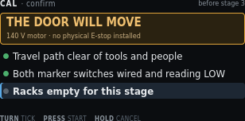
| On screen | Meaning |
|---|---|
CAL · confirm | Header left. Gate, not a capture screen. |
before stage 3 | Header right. This shot is the gate for open-marker seek. Other moving stages show their own number. |
THE DOOR WILL MOVE | Amber banner title. Condition before command. |
140 V motor · no physical E-stop installed | Banner detail. HOLD is the only cancel. There is no E-stop on this build. |
Green pip + Travel path clear of tools and people | Ticked. Operator has acknowledged a clear path. |
Green pip + Both marker switches wired and reading LOW | Ticked. NC markers at rest read LOW on this polarity. A HIGH rest would mean a cut wire or a made switch. |
Grey pip + highlight + Racks empty for this stage | Not yet ticked. Selected line. TURN moves among lines. This line appears when the stage requires empty racks. |
TURN tick | Toggle the highlighted checklist line. |
PRESS start | Start the stage when every line is ticked. Does nothing while a line is still grey. |
HOLD cancel | Return to the stage list. No motion. |
3. Stage 1a — current zero
Captured with PWM at zero. ACS712 offset only. It shares nothing with the shaft or key baselines.
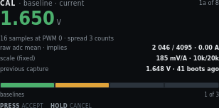
| On screen | Meaning |
|---|---|
CAL · baseline · current | Header left. First of three baseline captures. |
1a of 8 | Header right. Stage 1, first sensor, of eight stages. |
1.650 V (green) | Hero. Mean ACS712 output at PWM 0. Green means the spread is acceptable. |
16 samples at PWM 0 · spread 3 counts | How the mean was taken. Spread is ADC counts, not amps. |
raw adc mean · implies · 2 046 / 4095 · 0.00 A | Raw mean of 4095, and the cooked amp reading that offset implies (zero at rest). |
scale (fixed) · 185 mV/A · 10k/20k | ACS712-05B sensitivity and the Board A divider. Not an operator edit. |
previous capture · 1.648 V · 41 boots ago | Last stored zero, for comparison. No RTC. Age is boot count. |
Progress bar, first segment amber, baselines · 1 of 3 | Three baseline screens. This is the first. Green segments are done. Amber is now. Grey is remaining. |
PRESS accept | Keep this zero in RAM and go to shaft jitter. |
HOLD cancel | Discard this capture. Return to the stage list. |
4. Stage 1b — shaft jitter band
Measured at rest. This band sets stall minimum progress and the accumulation deadband.
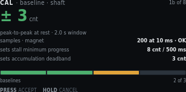
| On screen | Meaning |
|---|---|
CAL · baseline · shaft | Header left. Second baseline. |
1b of 8 | Header right. |
± 3 cnt (green) | Hero. Peak-to-peak AS5600 counts at rest. |
peak-to-peak at rest · 2.0 s window | How long the band was watched. |
samples · magnet · I2C ACK · detected | Bus then STATUS. I2C ACK means the chip answered. detected / lost / too weak / too strong is magnet quality. I2C NACK plus unread means the bus failed. |
sets stall minimum progress · 8 cnt / 500 ms | Stall check needs more motion than rest jitter. Derived from this band, not guessed. |
sets accumulation deadband · 3 cnt | Counts inside this band do not walk idle position. |
Progress, two green + one amber, baselines · 2 of 3 | Current zero accepted. Shaft is now. Key remains. |
PRESS accept · HOLD cancel | Keep the band, or discard and return to the list. |
5. Stage 1c — bottle key levels
Two captures: bottle out, then bottle in. Enter and exit thresholds are derived from the gap.
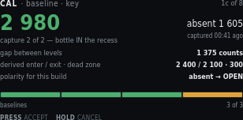
| On screen | Meaning |
|---|---|
CAL · baseline · key | Header left. Third baseline. |
1c of 8 | Header right. |
2 980 (green) | Hero. Present-level ADC this capture. |
capture 2 of 2 — bottle IN the recess | Operator has placed the bottle. Capture 1 was absent. |
absent 1 605 | Right of the hero. First capture, bottle out. |
captured 00:41 ago | Age of the absent capture this session. |
gap between levels · 1 375 counts | Present minus absent. A small gap means a weak magnet or a bad placement. |
derived enter / exit · dead zone · 2 400 / 2 100 · 300 | Hysteresis pair and the dead zone between them. Not a single threshold. |
polarity for this build · absent → OPEN | Default handbook polarity. Place the bottle to close. Change it in Settings if this cabinet is wired the other way. |
Progress, three green + one amber, baselines · 3 of 3 | Last baseline. Amber segment is this capture. |
PRESS accept · HOLD cancel | Keep both levels, or discard. |
6. Stage 2 — direction verify
Runs before any seek. A wrong invert flag would send the first seek at the far end of travel. Slow duty, short move. The operator confirms the door went the way the screen says.
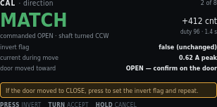
| On screen | Meaning |
|---|---|
CAL · direction | Header left. |
2 of 8 | Header right. |
MATCH (green) | Hero. Commanded OPEN and the shaft turned the expected way. |
commanded OPEN · shaft turned CCW | What firmware asked and what the encoder saw. |
+412 cnt | Net counts during the short move. |
duty 96 · 1.4 s | Creep duty and how long the probe ran. |
invert flag · false (unchanged) | Mapping of K1 to shaft sense. False means the compiled default already matches this cabinet. |
current during move · 0.62 A peak | Peak amps on this short move. A stall here is a wiring or bind problem, not a direction problem. |
door moved toward · OPEN — confirm on the door | Look at the physical door. The encoder can match a wrong invert if you never look. |
Amber line: If the door moved to CLOSE, press to set the invert flag and repeat. | Mismatch path. PRESS sets invert and runs the probe again. |
PRESS invert | Flip the invert flag and repeat the short move. |
TURN accept | Keep MATCH (or the new invert after a repeat). |
HOLD cancel | Discard. Return to the stage list. |
7. Stage 3 — open marker and origin
Repeat probes of the same edge from the same direction. The spread is the pass criterion. The accepted actuation edge becomes count zero.
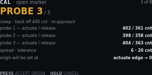
| On screen | Meaning |
|---|---|
CAL · open marker | Header left. |
3 of 8 | Header right. |
PROBE 3 / 3 (amber) | Hero. Last of three approaches. Amber because the motor just moved. |
creep · back off 400 cnt · re-approach | Probe method. Operational snug does not apply during calibration seeks. |
probe 1 — actuate / release · 402 / 361 cnt | First pair. Actuation and release differ because the switch has hysteresis. Approach from the same direction each time. |
probe 2 — actuate / release · 398 / 358 cnt | Second pair. |
probe 3 — actuate / release · 404 / 363 cnt | Third pair. |
spread · tolerance · 6 · 20 cnt | Actuate spread across repeats versus the allowed band. 6 is inside 20. |
origin will be set at · actuate edge → 0 | Accepted open actuation becomes count zero for everything downstream. |
PRESS accept origin | Keep the origin in RAM. |
HOLD cancel | Discard a half-probed edge. Partial marker data is not usable. |
8. Stage 4 — close marker and span
Same probe method at the other end. The accepted edge minus origin is the measured span. Obstruction bins divide this span.
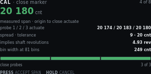
| On screen | Meaning |
|---|---|
CAL · close marker | Header left. |
4 of 8 | Header right. |
20 180 cnt (green) | Hero. Measured span from origin to close actuation. |
measured span · origin to close actuate | What the hero number is. Not seated. Seated is stage 5, past this edge. |
probe 1 / 2 / 3 actuate · 20 174 / 20 183 / 20 180 | Three actuation edges. Release edges were captured. This row shows actuate only. |
spread · tolerance · 9 · 20 cnt | Spread inside tolerance. |
implies shaft revolutions · 4.93 rev | Span divided by 4096 counts/rev. Sanity check against the mechanical stroke. |
bin width at 81 bins · 249 cnt | Span divided into 81 obstruction bins. |
Progress, three green, close probes · 3 of 3 | All three close probes done. |
PRESS accept span · HOLD cancel | Keep the span, or discard the half-probed edge. |
9. Stage 5 — closed seated
Past the close marker on creep. How the stop was found is stored: a current rise means the seal is loading. A stall without one means the door hit something solid.
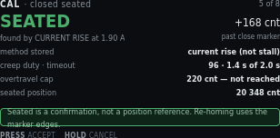
| On screen | Meaning |
|---|---|
CAL · closed seated | Header left. |
5 of 8 | Header right. |
SEATED (green) | Hero. Physical closed stop found. |
found by CURRENT RISE at 1.90 A | Method. Prefer current-draw rise (snug). Else record stall. |
+168 cnt | Counts past the close-marker actuation. |
past close marker | Seated is beyond the near-end flag, not at it. |
method stored · current rise (not stall) | Written with the capture so Diagnostics can show why seated was accepted. |
creep duty · timeout · 96 · 1.4 s of 2.0 s | Duty used and how much of the seek timeout was consumed. |
overtravel cap · 220 cnt — not reached | Hard cap past the marker. A hit here is a fault, not a seated capture. |
seated position · 20 348 cnt | Origin-relative counts of the seated stop. |
Green line: Seated is a confirmation, not a position reference. Re-homing uses the marker edges. | Do not treat seated as a home. Power-loss recovery seeks the open marker. |
PRESS accept · HOLD cancel | Keep seated, or discard. |
10. Stage 6 — stroke entry
The only operator-typed number, and the only place inches enter the system. It gates learn runs because bin widths are reported in centimetres. It never widens a safety limit.
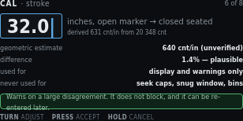
| On screen | Meaning |
|---|---|
CAL · stroke | Header left. |
6 of 8 | Header right. |
32.0 with caret | Pending inches, open marker to closed seated. TURN adjusts. |
inches, open marker → closed seated | What the number measures. Not overall cabinet width. |
derived 631 cnt/in from 20 348 cnt | Seated counts divided by the typed inches. Display only. |
geometric estimate · 640 cnt/in (unverified) | Independent estimate from the mechanical drawing. Unverified means it is not a measured fact. |
difference · 1.4% — plausible | Typed stroke versus the geometric estimate. A large disagreement warns. It does not block. |
used for · display and warnings only | Inches and counts-per-inch never feed a seek cap. |
never used for · seek caps, snug window, bins | Those limits stay in counts from stages 3–5. |
Green line: Warns on a large disagreement. It does not block, and it can be re-entered later. | You can fix a typo without repeating marker probes. |
TURN adjust | Change the pending inches. |
PRESS accept | Keep the stroke in RAM. Unblocks stage 7. |
HOLD cancel | Leave the previous stroke (or none). |
11. Stage 7 — obstruction table, empty racks
Three clear runs each way at the production profile. Obstruction reverse is off. The 2.50 A ceiling stays on. A trip discards that run instead of teaching it.
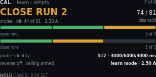
| On screen | Meaning |
|---|---|
CAL · learn · empty | Header left. Empty-rack table. |
7 of 8 | Header right. |
CLOSE RUN 2 (amber) | Hero. Second of three close strokes. Motor live. |
cruise · bin 44 of 81 · 1.38 A | Profile phase, current bin, live amps. |
74 / 81 | Bins that already have a valid sample this run set. |
bins valid | Learn runs stop at the marker, so some end bins stay unvisited. |
Open-run pips, two green + one amber, open runs · 2 of 3 | Open-direction progress. This shot is mid close-run, so the open bar may already be ahead. |
Close-run pips, one green + one amber + one grey, close runs · 1 of 3 | Close-direction progress. Run 2 is live. |
profile identity · 512 · 3000/6000/3000 ms | Cruise duty and accel / cruise / decel times. Stored with the table so a later profile change can invalidate it. |
reverse off · ceiling armed · learn mode · 2.50 A | Obstruction reverse is off so a bind is not taught as load. The hard ceiling still trips and discards the run. |
HOLD cancel run set | PWM off, current decay, K1 unchanged, discard the incomplete table. Return to the stage list. There is no PRESS on this live run. |
12. Stage 8 — obstruction table, loaded racks
Optional second table with racks at maximum expected load. Which table arms in service is still an open spec decision, so the screen states it.
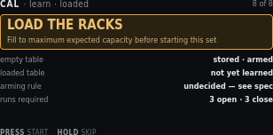
| On screen | Meaning |
|---|---|
CAL · learn · loaded | Header left. |
8 of 8 | Header right. |
LOAD THE RACKS | Amber banner title. Do not start this set empty. |
Fill to maximum expected capacity before starting this set | Banner detail. Max expected load, not an overload test. |
empty table · stored · armed | Stage 7 already produced a usable empty-rack envelope. |
loaded table · not yet learned | This stage has not run. |
arming rule · undecided — see spec | Which table Main uses in service is not chosen on this panel. See Production_Software.md. |
runs required · 3 open · 3 close | Same run count as the empty table. |
PRESS start | After racks are loaded, start the run set (path-clear still applies). |
HOLD skip | Leave the loaded table unlearned. Review will show it as optional skipped. |
13. Review and save
Single NVS write. Everything above lived in RAM until this screen. The blob carries the profile identity that will later invalidate it. Motor must be idle.
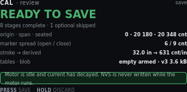
| On screen | Meaning |
|---|---|
CAL · review | Header left. |
save | Header right. This is the write point. |
READY TO SAVE (green) | Hero. Completeness check passed. |
8 stages complete · 1 optional skipped | Loaded-rack table was skipped. Empty table is enough to leave Needs Setup. |
origin · span · seated · 0 · 20 180 · 20 348 cnt | The three count references from stages 3–5. |
marker spread (open / close) · 6 / 9 cnt | Probe quality from stages 3 and 4. |
stroke → derived · 32.0 in → 631 cnt/in | Typed stroke and the display-only scale. |
tables · blob · empty armed · v3 3.6 kB | Which envelope is armed, format version, and blob size. |
Green line: Motor is idle and current has decayed. NVS is never written while the motor runs. | If the motor is still spinning, this screen will not write. |
PRESS save | One NVS write. Then return toward Main. |
HOLD discard | Drop the RAM results. Stored NVS is unchanged. |
14. Knob on a live stage
| Gesture | Typical meaning |
|---|---|
| TURN | Jog or adjust where the stage allows it (stroke entry, direction accept, checklist tick). |
| PRESS | Capture, accept, or start the next sample. |
| HOLD | Cancel the live procedure. Return to the stage list. |
When an earlier value changes, mark dependent later steps stale. There is no RTC. Metadata uses run count and relative millis only. Never reverse K1 without PWM blanking.
Private Reserve · DIN controller · first draft
Diagnostics
One screen per input or output. Focused content is large. Every detail page names the GPIO and Board A terminal and shows the live level. Supporting values stay small. Header prefix is DIAG ·.
1. Menu
Thirteen items. TURN windows the list. Pips flag anything already unhealthy. PRESS opens. HOLD exits to Main. Figure 1 is an older 12-item shot; live firmware splits jog into time and position. Items after the first window have their own figures below.
| On screen | Meaning |
|---|---|
DIAG · menu | Header left. |
1–6 of 13 ▾ (live) or the older 1–8 of 12 shot | Header right. Window into the 13-item list. The triangle means more items below. |
Green pip + highlight + Bottle door key — 49E + PRESENT | Selected. Hall sensor. Value is live cooked state. |
Green pip + Motor rotary encoder — AS5600 + OK | I²C ACK and shaft magnet in range. Amber pip + no mag means the bus is live but STATUS is lost, too weak, or too strong. Red pip + no i2c means the chip did not ACK at 0x36. |
Green pip + Limit switches + CLEAR | Neither marker is made. |
Green pip + Override rockers + CLOSE HELD | Close throw is made right now. Centre does nothing. PRESS on that page pulses a throw through the same path as the hardware. |
Green pip + Motor current load — ACS712 + 0.00 A | Live amps at rest. |
Grey pip + Motor PWM and direction + IDLE | Duty zero. Grey pip is idle, not a fault. |
Amber pip + Jog by time + no encoder | Amber because this page can command the motor. Timed detents. Shaft encoder is not read. |
Amber pip + Jog by position + needs enc or red locked | Count detents. Green magnet required. Locked if I²C or magnet is unhealthy. |
Amber pip + Obstruction test + MOVES MOTOR | Same warning. Plastic-bottle test. Does not write the learned table. |
TURN scroll · PRESS open · HOLD exit | Window the list, enter the highlighted item, or return to Main. |
Full list:
| # | Menu item | Value column | Opens |
|---|---|---|---|
| 7 | Jog by time | no encoder | Milliseconds per detent. Encoder unused. |
| 8 | Jog by position | needs enc / locked | Counts per detent. Requires a healthy AS5600. |
| 9 | Obstruction test | moves motor | Plastic-bottle envelope test. |
| 10 | Obstruction table | armed / stale | Close-direction graph first. TURN swaps to open. |
| 11 | EC11 knob and button | ok | Quadrature, detent scale, display timeout remaining. |
| 12 | Network and OTA | STA or AP | Address, mDNS, antenna note. |
| 13 | Stored calibration | ok / setup | Which steps are valid and why a stale one failed. |
Every detail page keeps a pin strip: GPIO, terminal, function, live level or raw value. HOLD back returns to this menu. Bottle key, limit markers, and override rockers can inject a cooked signal from PRESS. The pin strip stays the real GPIO.
2. Bottle door key — 49E
Present and absent are two calibrated levels with separate enter and exit thresholds. Polarity is stated in words because it is configurable. PRESS can pulse the cooked state without moving the bottle.
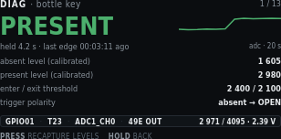
| On screen | Meaning |
|---|---|
DIAG · bottle key | Header left. |
1 / 14 | Header right. First of fourteen detail screens. The menu is not numbered here. |
PRESENT (green) | Hero. Cooked state after hysteresis. Amber plus SIM when PRESS has forced the state. |
pulse · adc 2971 · last edge … | Selected action (pulse or recapture), live ADC, and age of the last cooked edge. Sparkline is the real ADC, newest at the right. |
Sparkline + adc · 8 s | Raw ADC, newest at the right (dot). About 8 seconds once the strip is full. The trace scrolls left. The step up is the bottle going in. |
absent level (calibrated) · 1 605 | Stage 1c absent capture. |
present level (calibrated) · 2 980 | Stage 1c present capture. |
enter / exit threshold · 2 400 / 2 100 | Hysteresis pair derived from those levels. |
trigger polarity · absent → OPEN | Automatic Main command when the key leaves the recess. |
Pin strip: GPIO01 · T23 · ADC1_CH0 · 49E OUT | MCU pin, Board A terminal, ADC channel, sensor output name. Always the real pin, even during a pulse. |
2 971 / 4095 · 2.39 V | Live raw and volts at the pin. |
TURN action | Pulse the key, or recapture levels. Pulse is the default. The highlight stops at each end. Extra clicks do not wrap. |
PRESS pulse | Toggle cooked present/absent. Fires the same open/close edge as the hall sensor. Does not fake the ADC. |
PRESS recapture | After TURN: capture absent, then PRESS again with the bottle in. Same two-step as Calibration 1c. |
HOLD back | Return to the diagnostic menu. Clears a simulated key state. |
3. Motor rotary encoder — AS5600
The only source of door position. It also carries the jitter band and the drift from the last marker re-sync. I²C health and magnet STATUS are separate: ACK with no mag on the menu means the chip answered and the magnet is unreadable.
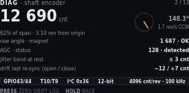
| On screen | Meaning |
|---|---|
DIAG · shaft encoder | Header left. |
2 / 14 | Header right. |
12 690 cnt | Hero. Accumulated counts from the open origin. |
62% of span · 3.10 rev from origin | Share of measured span, and shaft revolutions since origin. |
| Angle dial | Single-turn AS5600 angle inside the current revolution. Not the multi-turn door position. |
148.3° | That single-turn angle in degrees. |
1.7 rev/s CCW | Live shaft speed and direction. |
I2C 0x36 · ACK or NACK | Live bus. ACK means the last STATUS/angle read succeeded. Magnet can still be unreadable. |
raw angle · magnet · 1 687 · detected | 12-bit raw angle (0–4095) and STATUS: detected, lost, too weak, too strong, or unread if the bus failed. |
AGC (mid ~128) · 128 | Automatic gain. Meaningful only on ACK. Mid-range is a healthy air gap. |
jitter band at rest · ± 3 cnt | Stage 1b capture. Growing band is an early warning for a weak magnet. |
drift last re-sync (open / close) · −12 / +7 cnt | Correction applied the last time each marker was seen. Growing drift means lost turns or a slipping magnet. |
Pin strip: GPIO43/44 · T10/T9 · I²C 0x36 · 12-bit | SCL/SDA, terminals, bus address, resolution. |
4096 cnt/rev · 100 kHz | Counts per mechanical revolution and I²C clock. |
PRESS zero drift log | Clear the displayed per-marker drift totals. Does not change origin. |
HOLD back | Return to the menu. |
4. Limit switches
HIGH is the marker state. A cut wire is indistinguishable from a made switch, so the screen says so. Both markers active is a fault, shown here rather than as a silent refusal to start. PRESS can force a marker without blocking the optical path.
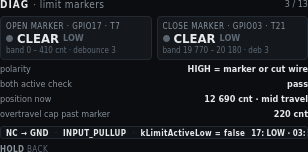
| On screen | Meaning |
|---|---|
DIAG · limit markers | Header left. |
3 / 14 | Header right. |
Open marker · GPIO17 · T7 | Left tile title. Pin and Board A terminal. |
Grey pip + CLEAR LOW | Open switch not made. Electrical level is LOW. |
band 0 – 410 cnt · debounce 3 | Count window where an open-marker actuation is accepted, and debounce samples. |
Close marker · GPIO03 · T21 | Right tile title. |
Grey pip + CLEAR LOW | Close switch not made. |
band 19 770 – 20 180 · deb 3 | Close-marker acceptance window and debounce. |
polarity · HIGH = marker or cut wire | NC to GND with pull-up. HIGH means the loop is open: at the end, or the wire is cut. |
both active check · pass | Both markers made at once is a fault. Pass means that is not happening. |
position now · 12 690 cnt · mid travel | Live counts and a cooked region name. |
overtravel cap past marker · 220 cnt | Hard cap after a marker. A seek that passes this is a fault. |
Pin strip: NC → GND · INPUT_PULLUP · kLimitActiveLow = false | Wiring and the firmware polarity constant. |
17: LOW · 03: LOW | Live GPIO17 and GPIO3 levels. Stays the real pin during a force. |
TURN select · PRESS force | Highlight open or close. The highlight stops at each end. Extra clicks do not wrap. PRESS latches that marker as if the switch were made. Amber pip and SIM on the tile. PRESS again clears that force. A forced destination marker will stop a move already in progress. |
HOLD back | Return to the menu. Clears a forced marker. |
5. Override rockers
Two paralleled stations act as one logical switch. Each throw is shown separately. A stuck throw is invisible if you only display the combined result. Both throws at once is a defined tie-break, not a fault. PRESS pulses the selected throw through the same path as the hardware.
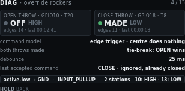
| On screen | Meaning |
|---|---|
DIAG · override rockers | Header left. |
4 / 14 | Header right. |
Open throw · GPIO10 · T20 | Left tile. Open side of both paralleled stations. |
Grey pip + OFF HIGH | Open throw not made. Pulled up. |
edges 14 · last 00:02:41 | Accepted edges since boot, and age of the last open edge. |
Close throw · GPIO18 · T8 | Right tile. |
Green pip + MADE LOW | Close throw is held to ground right now. |
edges 11 · last 00:00:03 | Close-edge count and the edge three seconds ago. |
command model · edge trigger · centre does nothing | Rocker centre is idle. Hold-to-run is not the model. |
both throws made · tie-break: OPEN wins | If both throws hit in the same cycle, firmware commands open. |
debounce · 25 ms | Switch debounce. Same family as Settings → Triggers. |
last accepted command · CLOSE · ignored, already closed | Last edge that passed debounce, and why it did not start a move. |
Pin strip: active-low → GND · INPUT_PULLUP · 2 stations | Wiring. Two stations in parallel hide a stuck mate unless this page splits the throws. |
10: HIGH · 18: LOW | Live GPIO10 and GPIO18. Stays the real pin during a pulse. |
TURN select · PRESS pulse | Highlight open or close. The highlight stops at each end. Extra clicks do not wrap. PRESS injects a short made-edge on that throw, the same command as the physical rocker. It can start a move. Amber pip and SIM while the pulse is live. |
HOLD back | Return to the menu. Drops a pulse that has not expired. |
6. Motor current load — ACS712-05B
Live amps against the learned envelope for the bin the door is in. Trip is a time-plus-threshold decision, so inrush skip and hold time are on the same page.
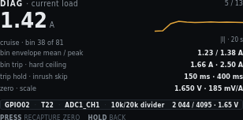
| On screen | Meaning |
|---|---|
DIAG · current load | Header left. |
5 / 14 | Header right. |
1.42 A | Hero. Cooked motor current. |
cruise · bin 38 of 81 | Motion phase and which obstruction bin the door is in. |
Sparkline + |I| · 8 s | Absolute current, newest at the right (dot). About 8 seconds once the strip is full. The trace scrolls left. The step up is the start of cruise. |
bin envelope mean / peak · 1.23 / 1.38 A | Learned mean and peak for bin 38. |
bin trip · hard ceiling · 1.66 A · 2.50 A | This bin’s trip, then the compile-time ceiling. |
trip hold · inrush skip · 150 ms · 400 ms | How long current must stay over trip, and how long after PWM-on the envelope is ignored. |
zero · scale · 1.650 V · 185 mV/A | Stage 1a zero and the fixed ACS712-05B scale. |
Pin strip: GPIO02 · T22 · ADC1_CH1 · 10k/20k divider | Pin, terminal, ADC channel, Board A divider. |
2 044 / 4095 · 1.65 V | Live raw and volts. Near the rest zero, plus load. |
PRESS recapture zero | Jump to Calibration stage 1a. Motor must be at rest. |
HOLD back | Return to the menu. |
7. Motor PWM and direction
Duty and K1 are separate blocks. Duty must reach zero and current must decay before the relay moves, so the blank timers are on this page.
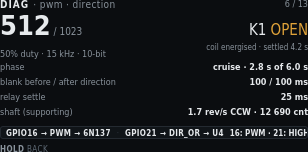
| On screen | Meaning |
|---|---|
DIAG · pwm · direction | Header left. |
6 / 14 | Header right. |
512 / 1023 | Hero. Live duty in 10-bit counts. |
50% duty · 15 kHz · 10-bit | Percent, carrier, resolution. Carrier is compile-time. It is not a setting. |
K1 OPEN (amber) | Direction relay commanded open. Amber because the coil is energised. |
coil energised · settled 4.2 s | K1 has been in this state long enough to be settled. |
phase · cruise · 2.8 s of 6.0 s | Profile phase and how much of cruise time has elapsed. |
blank before / after direction · 100 / 100 ms | PWM-off windows around a K1 change. Never reverse K1 without this blanking. |
relay settle · 25 ms | Wait after K1 before PWM may rise. |
shaft (supporting) · 1.7 rev/s CCW · 12 690 cnt | Encoder as a supporting signal on this page. The focused page is PWM. |
Pin strip: GPIO16 → PWM → 6N137 · GPIO21 → DIR → U4 | PWM path onto Board B, and direction into U4. |
16: PWM · 21: HIGH | GPIO16 is toggling. GPIO21 is HIGH for open on this build. |
HOLD back | Return to the menu. This page does not command the motor. |
8. Jog by time
Owns the motor. Each EC11 detent (or web − / +) queues a fixed run time at jog duty. Same-direction clicks add to that queue. Opposite clicks subtract; when the queue is gone, that click reverses through the normal PWM-off, decay, blank, and K1 settle windows. PRESS while idle cycles duty (5–25%) and time per detent (200–1000 ms). While that timed move is running, the shaft encoder is not polled, so I²C NACKs cannot stretch the queue. Idle on this page still reads the AS5600 (same as most diagnostic screens). After PWM stops, one catch-up read refreshes STATUS. Markers and the learned envelope do not start, stop, or abort the move. Current is a live 0–2.50 A graph when the ACS712 is sampling; it is display-only. The pin strip reads encoder ignored.
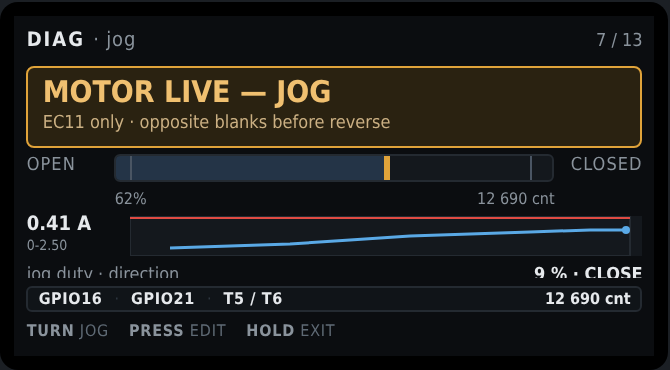
| On screen | Meaning |
|---|---|
DIAG · jog by time | Header left. |
7 / 14 | Header right. |
MOTOR LIVE — TIME | Amber banner. This page owns the motor. Hall and rocker cannot preempt it. |
encoder unused — time per detent | Banner detail. AS5600 I²C is skipped only while the timed queue is moving, not while this page is idle. |
jog duty · direction · 9 % · CLOSE | Jog PWM as a percent of 10-bit full scale (5–25%). K1 for this jog. PRESS while idle highlights this row; TURN changes it. |
step · remaining · 400 ms · 800 ms | Time added per detent (200–1000 ms, 50 ms steps) and how much powered time is still queued. Queue caps at 4 s. Remaining is wall-clock, not loop ticks. |
| Live amp strip · 0–2.50 scale | ACS712 history. Display-only. Not used to run or stop the jog. |
Pin strip: GPIO16 · GPIO21 · encoder ignored | PWM and direction only. No shaft counts on this page. |
TURN jog or TURN duty / TURN step | Default: CW queues close, CCW queues open. Same way extends. Opposite shortens, then blanks and reverses. |
PRESS stop or PRESS edit / PRESS next | While moving: drop PWM on a short click (after debounce, on release). While idle: cycle Jog → duty % → step ms → Jog. |
HOLD exit | Stop if moving, save a pending edit, then return to the menu. |
9. Jog by position
Owns the motor only while the AS5600 ACKs and STATUS shows a magnet that is neither too weak nor too strong. That is not a trusted origin; calibration is not required. The queue is relative: each detent is shaft counts in the commanded direction from the live unwrap, not distance from open or close. The pin strip may still show accumulated counts from origin when origin is trusted. Opening this page cancels a leftover time-jog move and forces an encoder poll so the lock banner is not a stale STATUS from a skipped I²C window. Each detent uses the same jog duty (default 64 counts, 16–512 in steps of 16). Same-direction clicks extend the count queue (cap 2048). Opposite clicks subtract, then reverse through the same blanking path as time jog. The stall watchdog is armed when PWM starts so an old timer cannot trip on the first frame. Travel-cap (absolute) is not applied on this page. If I²C fails or STATUS drops out of range, PWM stops immediately without latching a sensor fault. While locked, the banner title is ENCODER REQUIRED and the subtitle names the check that failed. No dedicated LCD shot in this set; chrome matches time jog with counts in place of milliseconds.
| On screen | Meaning |
|---|---|
DIAG · jog by position | Header left. |
8 / 14 | Header right. |
MOTOR LIVE — COUNTS | Amber banner when I²C ACK and STATUS are good. TURN jogs. |
stops if encoder is lost | Banner detail when the sensor is good. |
ENCODER REQUIRED | Amber banner. Jog is locked. TURN does not move the motor. |
I2C NACK - chip unread at 0x36 | Banner detail. The AS5600 did not ACK. Not a magnet STATUS flag. Bus time is the 10 ms Wire timeout on a failed transfer; too-weak/too-strong do not change that time. |
STATUS: magnet too weak | Banner detail. Chip ACKed. STATUS bit “too weak.” Angle was read and discarded. |
STATUS: magnet too strong | Banner detail. Chip ACKed. STATUS bit “too strong.” |
STATUS: magnet lost | Banner detail. Chip ACKed. Magnet-detect bit clear (and not the too-weak/too-strong pair). |
| Travel widget | Shown. Live counts and magnet label on the pin strip (AS5600 T5 / T6). |
jog duty · direction | Same 5–25% duty as time jog. Shared setting. |
step · remaining · counts | Relative counts per detent and remaining in the commanded direction. Not a target absolute position. |
TURN jog | Ignored while locked. Otherwise same CW close / CCW open as time jog. |
PRESS stop / HOLD exit | Same cancel rules as time jog. |
10. Obstruction test
Plastic bottle between the doors. Same envelope rules as Main. Does not write the learned table. Learn runs assume a clear path. This test is not a substitute for them.
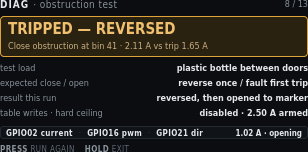
| On screen | Meaning |
|---|---|
DIAG · obstruction test | Header left. |
9 / 14 | Header right. |
TRIPPED — REVERSED | Amber banner title. Close obstruction fired. Reverse is in progress or just finished. |
Close obstruction at bin 41 · 2.11 A vs trip 1.65 A | Where and how far over trip. |
test load · plastic bottle between doors | Specified test article. Not a body part, not a tool. |
expected close / open · reverse once / fault first trip | Close reverses once. Open faults on the first trip. Same as Main. |
result this run · reversed, then opened to marker | What this test actually did. |
table writes · hard ceiling · disabled · 2.50 A armed | A deliberate obstruction cannot be taught as load. The ceiling stays on. |
Pin strip: GPIO02 current · GPIO16 pwm · GPIO21 dir | Signals this test uses. |
1.02 A · opening | Live current and direction after reverse. |
PRESS run again | Start another close into the bottle. |
HOLD exit | Cancel if live, then return to the menu. |
11. Obstruction table — close direction
Learned envelope as a curve. Breakaway at the open end and seal loading at the close end are the shape you want. A bump in the middle is a bind. The grey block past the close marker is travel the learn runs never enter, because snug is a separate window.
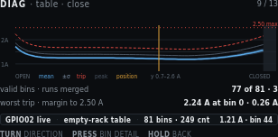
| On screen | Meaning |
|---|---|
DIAG · table · close | Header left. Close-direction envelope. |
10 / 14 | Header right. Menu item 10 is this pair of graphs. |
1A / 2A on the Y axis | Current scale. The window is 0.7–2.6 A so the curve is readable on 170 pixels. |
Dashed red line + 2.50 max | Compile-time hard ceiling. Not a learned value. |
Blue mean curve | Merged mean current per bin from the learn runs. |
Grey band ±σ | One-sigma band around the mean. |
Dashed red trip curve | Per-bin trip used on Main. |
Thin grey peak curve | Highest sample merged into that bin. |
Vertical amber position line | Live door position on this graph. |
Dark block near CLOSED | Bins past the close marker. Learn runs never visit them. Snug is a separate window. |
Legend: OPEN · mean · ±σ · trip · peak · position · y 0.7–2.6 A · CLOSED | X ends and the plotted series. Y window is stated so the clipped axis is not mistaken for 0–2.50 A. |
valid bins · runs merged · 77 of 81 · 3 | Bins with data, and how many strokes were merged. |
worst trip · margin to 2.50 A · 2.24 A at bin 0 · 0.26 A | Highest trip on this table (breakaway at the open end) and room left to the ceiling. |
Pin strip: GPIO02 live · empty-rack table · 81 bins · 249 cnt | Which table is drawn, bin count, and bin width in counts. |
1.21 A · bin 44 | Live current and the bin under the position line. |
TURN direction | Swap to the open-direction graph. |
PRESS bin detail | Numeric values for the bin under the cursor (not a separate mockup in this set). |
HOLD back | Return to the menu. |
12. Obstruction table — open direction
Same table, other direction. Breakaway is now at the closed end, where the door pulls out of the seal. The unvisited block moves to the open end. Two independent tables are why both views exist.
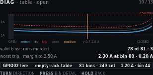
| On screen | Meaning |
|---|---|
DIAG · table · open | Header left. |
11 / 14 | Header right. |
Graph, Y labels, 2.50 max, legend | Same series as the close graph. Shape differs: peak at the closed end. |
Dark block near OPEN | Bins before the open marker. Open-direction learn runs never visit them. |
valid bins · runs merged · 78 of 81 · 3 | Open-direction bins with data (bins at and after the open marker) and merged run count. |
worst trip · margin to 2.50 A · 2.30 A at bin 80 · 0.20 A | Highest open-direction trip (breakaway at the closed end) and room left to the ceiling. |
Pin strip: GPIO02 live · empty-rack table · 81 bins · 249 cnt | Same table family as the close view. |
1.20 A · bin 44 | Live current and the bin under the position line, read against the open envelope. |
TURN direction · PRESS bin detail · HOLD back | Same gestures as the close graph. |
13. EC11 knob and button
An input with no other home. Detent scale is bench-calibrated, so raw quadrature and the scaled count sit side by side.
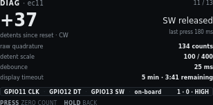
| On screen | Meaning |
|---|---|
DIAG · ec11 | Header left. |
12 / 14 | Header right. |
+37 | Hero. Scaled detents since reset. Sign is CW positive on this shot. |
detents since reset · CW | What the hero counts, and last turn sense. |
SW released | Knob switch is up. |
last press 180 ms | Duration of the last PRESS (under the HOLD threshold). |
raw quadrature · 134 counts | Unscaled CLK/DT edges. Compare with the detent hero to check the scale. |
detent scale · 100 / 400 | Quadrature-to-detent fraction from ec11_calibration.h (kEc11DetentScaleNumerator / kEc11DetentScaleDenominator). 100/400 is one detent per four edges. |
debounce · 25 ms | SW debounce. |
display timeout · 5 min · 3:41 remaining | Idle blanking setting and time left until GPIO38 backlight and GPIO15 panel power drop. Default is 5 minutes. |
Pin strip: GPIO11 CLK · GPIO12 DT · GPIO13 SW · on-board | EC11 on the T-Display-S3, not a Board A terminal. |
1 · 0 · HIGH | Live CLK, DT, SW. SW HIGH is released with pull-up. |
PRESS zero count | Reset the detent hero to 0. Does not change calibration constants. |
HOLD back | Return to the menu. |
14. Network and OTA
Setup surface. The steel lid can block the onboard antenna, so that note is on the screen, not only in the build docs. When SoftAP is serving, this page shows the join password in clear (default reserved). The AP name defaults to PrivateReserve. After join, open http://192.168.4.1/. PRESS rejoin retries the stored STA SSID. To drop that SSID, use Settings → Service → Clear station Wi-Fi, then reboot.
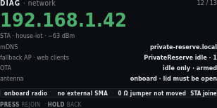
| On screen | Meaning |
|---|---|
DIAG · network | Header left. |
13 / 14 | Header right. |
192.168.1.42 (green) | Hero. Station address when STA joined. |
STA · house-iot · −63 dBm | Role, stored SSID, RSSI. |
mDNS · private-reserve.local | mDNS name for HTTP on the joined LAN. |
fallback AP · web clients · PrivateReserve idle · 1 | SoftAP name, idle because STA joined, and one HTTP client. If SoftAP is the live link, this row is join password and the WPA2 PSK (default reserved) instead. |
OTA · idle only · armed | OTA is allowed only while the motor is idle. Armed means the endpoint is listening. |
antenna · onboard · lid must be open | No external SMA. Close the steel lid and RSSI can collapse. |
Pin strip: onboard radio · no external SMA · 0 Ω jumper not moved | Antenna path as shipped. Do not move the 0 Ω jumper unless you fit an external antenna. |
STA joined | Live radio role. |
PRESS rejoin | Retry STA join with the stored SSID. If join fails, SoftAP starts. This does not clear the stored password. To wipe station credentials, use Settings → Service → Clear station Wi-Fi, then reboot from that result screen or from Reboot controller. |
HOLD back | Return to the menu. |
15. Stored calibration
Answers whether this controller may run automatically, and why not. Stale entries name the value that invalidated them.
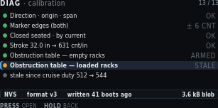
| On screen | Meaning |
|---|---|
DIAG · calibration | Header left. |
14 / 14 | Header right. Last detail screen. |
Green pip + Direction · origin · span + OK | Stages 2–4 stored and valid. |
Green pip + Marker edges (both) + ± 6 CNT | Open/close probe spread still inside tolerance. The value column shows the open-side figure on this shot. |
Green pip + Closed seated · by current + OK | Stage 5 method still current-rise. |
Green pip + Stroke 32.0 in → 631 cnt/in + OK | Stage 6 still matches the stored span. |
Green pip + Obstruction table — empty racks + ARMED | Empty envelope is in service. |
Amber pip + highlight + Obstruction table — loaded racks + STALE | Selected. Loaded table is not usable. |
Grey pip + stale since cruise duty 512 → 544 | Why. A motion-profile change invalidates both tables. This row names the field that did it. |
Pin strip: NVS · format v3 · written 41 boots ago | Where the blob lives, format, age in boots (no RTC). |
3.6 kB blob | Stored size. |
PRESS open | Jump to the matching Calibration stage for the highlighted row. |
HOLD back | Return to the menu. |
Private Reserve · DIN controller · first draft
Settings
Not a fourth operating mode. A menu reached from Main, the same way as Calibration and Diagnostics. Header prefix is SET ·. Motion is idle while values are edited. Service holds the destructive actions: erase tables, restore defaults, clear calibration, clear station Wi-Fi, and reboot the controller.
SETTINGS LOCKED. Pending edits
stay in RAM. Retry when idle. A profile or travel change that invalidates
learned tables says so on its own screen and again on confirm.
1. Groups
Grouped by effect, not by NVS layout. The count on the right is how many values sit in each group. An amber pip marks a group that holds an unsaved change. Six rows fit. Service is the seventh row, off this shot until you TURN.
| On screen | Meaning |
|---|---|
SET · groups | Header left. Settings root. |
3 unsaved ▾ | Header right. Three staged field edits. The triangle means more groups below. |
Amber pip + highlight + Motion profile + 7 VALUES | Selected. Cruise, floors, creep, jog, accel, cruise time, decel. Amber because cruise duty is staged 512 → 544. |
Green pip + Travel and markers + 6 VALUES | Caps, probe tolerance, resync drift. Some rows open a locked derived page. |
Amber pip + Obstruction detection + 5 VALUES | Inrush skip, snug amps, envelope knobs. Amber because this group also holds a staged edit in this example. |
Green pip + Triggers and debounce + 3 VALUES | Bottle-key polarity and switch debounce. Saving polarity re-arms from the current sensor level. It does not command a move. |
Green pip + Display and knob + 3 VALUES | Display timeout (minutes, default 5), HOLD min ms, HOLD max ms. |
Green pip + Network + 5 VALUES | STA SSID, STA password, join timeout, AP name, AP password. Station password is web-only. Fallback AP password is shown in clear (default reserved). This row is clipped at the bottom of the panel. |
Service and defaults + 5 ACTIONS (off-screen) | Seventh group. TURN to it. Destructive. Figure 11. Clear station Wi-Fi is the fourth action; Reboot controller is the fifth. PRESS twice. |
TURN scroll | Move the highlight. Window the list. |
PRESS open | Enter the highlighted group. |
HOLD exit | Return to Main. Staged edits stay in RAM until Review saves or discards them. |
2. Motion profile group
A value list, not a form. Pending edits show the new value in amber next to the stored one. Decelerate is the seventh row, off this shot.

| On screen | Meaning |
|---|---|
SET · motion | Header left. |
7 values | Header right. Count in this group. |
Highlight + Cruise duty + 512 → 544 (544 amber) | Selected. Stored 512, pending 544. Changing this invalidates both learned tables. |
Minimum moving duty · 64 | Floor while the profile is moving. Below this the motor may not break away. |
Creep duty · 96 | Duty for marker seeks, snug, and short calibration moves. |
Jog duty · 96 | 10-bit duty for both diagnostic jog pages. Those pages edit it as 5–25%. Time jog also edits step as 200–1000 ms. Position jog edits step as 16–512 counts. |
Accelerate · 3000 MS | Time to climb from moving floor to cruise. Changing it invalidates tables. |
Cruise time · 6000 MS | Time at cruise duty. Changing it invalidates tables. Clipped at the bottom of this shot. |
Decelerate · 3000 MS (off-screen) | Seventh value. TURN to it. Time to drop from cruise to creep. Changing it invalidates tables. |
TURN scroll · PRESS edit · HOLD back | Move, open the edit screen, or return to groups. |
3. Edit — cruise duty
The sharpest setting on the controller. Range, default, and step are on the panel. The consequence line is stated before the edit is accepted.

| On screen | Meaning |
|---|---|
SET · cruise duty | Header left. Field name. |
motion 1/7 | Header right. First field in the motion group. |
544 with caret, blue box | Pending value. TURN changes it. |
duty counts, 10-bit | Unit. Same 0–1023 scale as the PWM diagnostic. |
was 512 · 53% of 1023 · 15 kHz fixed | Stored value, percent of full scale, and the compile-time carrier. 15 kHz is not editable. |
| Blue fill on the range bar, white tick | Fill is the pending value. The tick is the default (512). |
min 128 · default 512 · max 768 | Allowed range and factory default. Max is below 1023 so cruise cannot sit on the rail. |
step per detent · 8 counts | How much TURN changes the pending value. |
estimated stroke time · 12.0 s → 11.4 s | Advisory. Faster cruise shortens the move. Not a safety limit. |
invalidates · both learned tables (amber) | Accepting this drop both envelopes to stale. Until a relearn, trip is the 2.50 A ceiling only. |
TURN adjust · PRESS accept · HOLD cancel | Change, keep the pending value (then confirm), or restore 512. |
4. Confirm — consequence of the edit
Shown when an accepted edit invalidates learned data. Dropping to the hard ceiling is a real reduction in protection, so it is spelled out and needs a second press.

| On screen | Meaning |
|---|---|
SET · confirm | Header left. |
cruise duty | Header right. Which field triggered this gate. |
RELEARN REQUIRED | Amber banner title. |
Changing the profile invalidates both obstruction tables | Banner detail. Cruise duty, accel, cruise time, and decel all do this. |
Amber pip + Empty-rack table + ARMED → STALE | Empty envelope is in service now. After this save it will not be. |
Amber pip + Loaded-rack table + STALE → STALE | Already stale. Stays stale. |
Red pip + Until relearn, trip is + 2.50 A CEILING ONLY | Protection drops to the hard ceiling. Main still runs, with less discrimination. |
PRESS accept change | Keep the pending cruise duty. Tables mark stale on Review save, not on this press alone. |
HOLD keep 512 | Drop the pending edit. Stored 512 stays. |
5. Edit — display timeout
A benign value, shown for contrast. No consequence line, no confirm step. Units are minutes because that is how an operator thinks about a screen going dark.

| On screen | Meaning |
|---|---|
SET · display timeout | Header left. |
display 1/3 | Header right. First of three Display and knob fields. |
5 with caret | Pending minutes of idle before blanking. |
minutes of idle | Unit on the panel. Firmware stores milliseconds. |
stored 300 000 ms · 0 disables blanking | NVS value for 5 minutes. Zero means the panel stays on. |
Range bar, min 1 · default 5 · max 60 | Allowed minutes. Default matches the factory 300000 ms. |
step per detent · 1 minute | TURN step. |
wakes on · knob turn · knob press · GPIO14 | What resets the timer and what wakes a blanked panel. Web commands also reset it. Wake returns to Main. |
invalidates · nothing | This field does not stale calibration or tables. Dim on purpose. |
TURN adjust · PRESS accept · HOLD cancel | Same edit gestures as cruise duty. No confirm step after PRESS. |
6. Edit — trigger polarity
An enumerated choice, so it is a two-item pick list rather than a number. Saving re-arms the trigger from the level the sensor is reading now, which is why that line is on the screen.

| On screen | Meaning |
|---|---|
SET · key polarity | Header left. |
triggers 1/3 | Header right. First of three Triggers and debounce fields. |
Green pip + highlight + Bottle absent opens the door + DEFAULT | Selected choice. Handbook polarity. Place the bottle to close. |
Grey pip + Bottle present opens the door | Inverted polarity. Use only if this cabinet is wired that way. |
key reads now · PRESENT · adc 2 971 | Live cooked state and raw ADC, so you can see what re-arm will start from. |
on save · re-arm from current level, no move | Firmware adopts the new polarity from the present reading. It does not command open or close. |
client handbook says · place the bottle to open (amber) | Published client instruction. Compare it with the selected row before you accept. Absent-opens means remove the bottle to open. Present-opens means place the bottle to open. |
TURN choose · PRESS accept · HOLD cancel | Move the highlight, stage the choice, or keep the previous polarity. |
7. Network group
Text entry through one knob is a trap, so the LCD shows the values and points at the web page. The station password is masked. The fallback AP password is shown in clear (default reserved) so a phone can join PrivateReserve before /wifi exists. Then open http://192.168.4.1/. The web View of this screen adds a clickable Set SSID and password link, the same idea as Docs adding Open GitHub page. That form is hosted by the controller at /wifi and is not drawn on the LCD. Scan takes a few seconds. The page stays live. The screen states that the web interface has no login. To drop the stored STA network, do not edit this list: use Service → Clear station Wi-Fi, then reboot.

| On screen | Meaning |
|---|---|
SET · network | Header left. |
5 values | Header right. |
Station SSID · house-iot | Stored STA network name. Shown in clear. |
Station password · ******** (web only) | Masked. The LCD cannot edit it. On the web View of this screen, open Set SSID and password. That is a separate page at /wifi on the controller, with a phone keyboard and a Scan list. Scan takes a few seconds; the page stays live. It is not on the LCD. |
Join timeout · 15 000 ms | How long STA join may run before SoftAP starts. This is a number. PRESS can edit it from the knob. |
Fallback AP name · PrivateReserve | SoftAP SSID when STA is empty or join fails. Default name is PrivateReserve. |
Fallback AP password · reserved | Shown in clear. You need this before the web page exists. Default is reserved. Empty means an open AP. Change it later on /wifi. |
Amber line: No login on the web page. Anyone on this network can move the door. | HTTP is port 80 with no application login. Do not expose that LAN. |
TURN scroll | Move among rows. |
PRESS edit numbers | Edit join timeout (and other numeric fields). SSID and passwords do not open a knob editor. On the web, a blue Set SSID and password link opens /wifi. To drop the stored STA network, use Service → Clear station Wi-Fi. |
HOLD back | Return to groups. |
8. Derived and locked values
Read-only by design. Counts-per-inch came from a measured span and a typed stroke. The ceiling and the PWM carrier are hardware facts. Showing them with a lock stops somebody hunting for an edit screen.

| On screen | Meaning |
|---|---|
SET · derived · locked | Header left. |
read only | Header right. No edit affordance. |
Measured span · 20 180 cnt · from stage 4 | Close-marker actuation minus origin. Dim because it is not editable here. |
Counts per inch · 631 · derived from stroke | Display scale only. Never a seek cap. |
Seated position · 20 348 cnt · stage 5 | Closed seated counts. |
Hard current ceiling · 2.50 A · compile-time | Not an NVS setting. Firmware constant. |
PWM carrier · 15 kHz · 10-bit | Not an NVS setting. Hardware/firmware fact. |
Green line: Recalibrate to change these. No settings screen can adjust them. | Span and seated change only through Calibration. Ceiling and carrier do not change in the field. |
HOLD back | Return. There is no PRESS. |
9. Review and save pending changes
The single write point, mirroring Calibration review. It lists every staged change with old and new value. It will not write while the motor is running.

| On screen | Meaning |
|---|---|
SET · review | Header left. |
3 changes | Header right. Three field writes in this set. The side-effect row is extra. |
READY TO SAVE (green) | Hero. Motor idle, current decayed. |
motor idle · current decayed | Write precondition. Same rule as Calibration review. |
Amber pip + Cruise duty + 512 → 544 | First staged write. Amber because it invalidates tables. |
Green pip + Display timeout + 5 → 8 MIN | Second staged write. Benign. |
Green pip + Switch debounce + 25 → 30 MS | Third staged write. |
Amber pip + Side effect: both tables → stale | Not a field you typed. Consequence of cruise duty. Named so it cannot be missed. |
PRESS save all | One NVS write of the remaining rows. |
TURN drop one | Remove the highlighted row from this set. It stays at the stored value. |
HOLD discard | Drop the whole set. Stored NVS is unchanged. |
10. Edit blocked — motor busy
A defined refusal, not an error. Configuration cannot change under a running profile or an active calibration stage. The screen names which one is holding the lock.

| On screen | Meaning |
|---|---|
SET · blocked | Header left. |
no write | Header right. This screen will not commit NVS. |
SETTINGS LOCKED | Red banner title. |
Door is closing · configuration writes need an idle motor | Banner detail. Why, and the rule. |
holder · automatic close · cruise | Which activity owns the motor. Could also name a calibration or jog step. |
pending changes · 3 kept in memory | Staged edits survive. They are not discarded by the lock. |
retry · when motion completes or faults | Open Settings again after idle. Review can then save. |
HOLD back | Leave. No PRESS. There is nothing to accept. |
11. Service and defaults
Destructive actions live together, away from ordinary edits. Each states its blast radius. PRESS confirm twice. Motor must be idle. Full factory erase is USB-only. It is not on this menu.

| On screen | Meaning |
|---|---|
SET · service | Header left. |
5 actions | Header right. Not values. Actions. |
Red pip + highlight + Erase obstruction tables + BOTH | Selected. Drops empty and loaded envelopes. Origin stays. Hard ceiling until relearn. |
Amber pip + Restore setting defaults + KEEPS CALIBRATION | Settings struct reset. Keeps calibration. Keeps Wi-Fi strings. |
Red pip + Clear calibration and origin + FORCES SETUP | Main shows Needs Setup. Automatic motion blocks until Calibration runs again. |
Amber pip + Clear station Wi-Fi + SOFTAP AFTER REBOOT | Zeros stored STA SSID and password. Fallback AP name and password stay. The live STA session stays until reboot. Next boot skips STA and starts SoftAP. |
Amber pip + Reboot controller + NOW | Stops PWM and resets the ESP32. Same as a power cycle. Motion does not resume. PRESS twice, motor idle. |
selected action · erases both envelopes · hard ceiling until relearn | Blast radius of the highlighted row, restated under the list. |
PRESS confirm twice | First PRESS arms. Second PRESS runs. HOLD at either step aborts. TURN after the first PRESS cancels the arm. |
HOLD back | Return to groups without running an action. |
12. Station Wi-Fi cleared
Shown after Clear station Wi-Fi runs. The write is already in NVS. PRESS reboots now so SoftAP can start. HOLD returns to Settings if you want to reboot later from Service.

| On screen | Meaning |
|---|---|
SET · wifi | Header left. |
reboot | Header right. The change is stored. SoftAP starts on the next boot. |
WIFI CLEARED | Warn banner. Station SSID and password are empty. |
PRESS reboot · SoftAP on next boot | This session can stay on the old STA address until you PRESS or power-cycle. |
Station SSID · (empty - AP only) | Boot will skip STA join. |
Fallback AP name · PrivateReserve | Unchanged. Join this AP after reboot, then set a new SSID on the web. |
Join password · reserved | WPA2 PSK for that AP. Type it on the phone. Shown here because the web page is not reachable until you join. |
After reboot · join AP, then set SSID on the web | SoftAP starts. Then open http://192.168.4.1/wifi. The live STA link, if any, stays until this reboot. |
PRESS reboot | Stops PWM and resets the ESP32. One PRESS. Motor must be idle. |
HOLD back | Return to Settings groups without rebooting. |